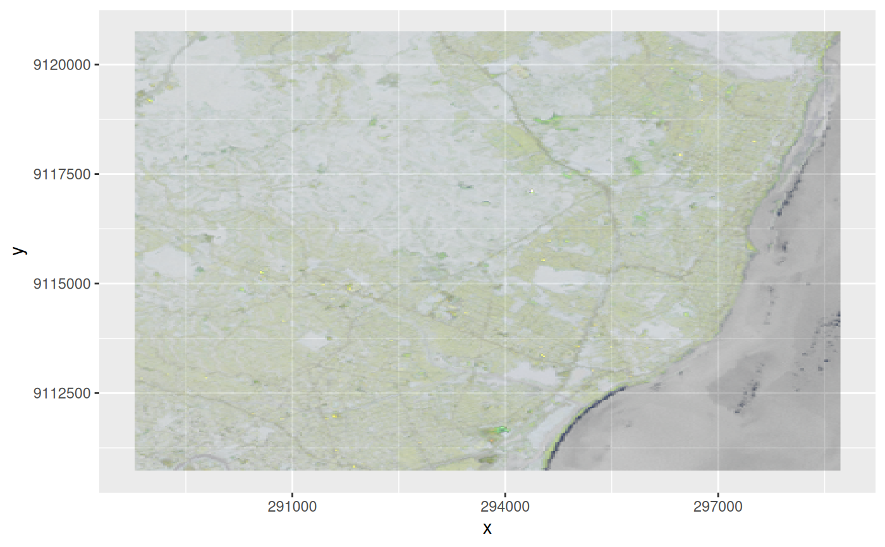

reduce dimension to rgb (alpha) hex values
st_rgb( x, dimension = 3, use_alpha = FALSE, maxColorValue = 255L, probs = c(0, 1), stretch = FALSE )
| x | object of class |
|---|---|
| dimension | dimension name or number to reduce |
| use_alpha | logical; if TRUE, the fourth band will be used as alpha values |
| maxColorValue | integer; maximum value for colors |
| probs | probability values for quantiles used for stretching |
| stretch | logical; if |
the dimension's bands are mapped to red, green, blue, alpha; if a different ordering is wanted, use [.stars to reorder a dimension, see examples
#> stars object with 2 dimensions and 1 attribute #> attribute(s): #> rgb3 #> Length:122848 #> Class :character #> Mode :character #> dimension(s): #> from to offset delta refsys point values x/y #> x 1 349 288776 28.5 PROJCS["UTM Zone 25, Sout... FALSE NULL [x] #> y 1 352 9120761 -28.5 PROJCS["UTM Zone 25, Sout... FALSE NULL [y]r = st_rgb(x[,,,c(6,5,4,3)], 3, use_alpha=TRUE) # now R=6,G=5,B=4,alpha=3 if (require(ggplot2)) { ggplot() + geom_stars(data = r) + scale_fill_identity() }